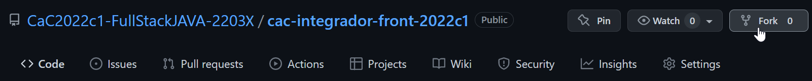

Deberás hacer un fork de este proyecto en tu cuenta de GitHub:
Luego, en tu máquina local y a través de la consola, podrás clonar tu repositorio remoto mediante el comando git clone urlDeTuRepositorio. Recordá subir tus cambios a GitHub (git push) periódicamente para poder ver tus avances
Debés replicar, mediante código en el archivo index.html y donde además consideres, la página
principal del sitio que figura más abajo
Se recomienda el uso de Bootstrap. Las imágenes a
utilizar ya se encuentran en el proyecto, dentro de la carpeta img
Modo de entrega: Compartir el link de tu repo en GitHub al docente a través del foro
Límite de entrega: Domingo 1 de mayo a las 23:59 hs